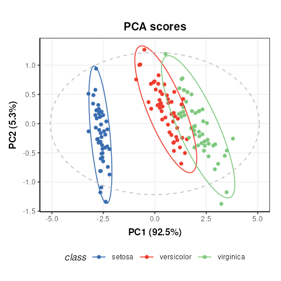
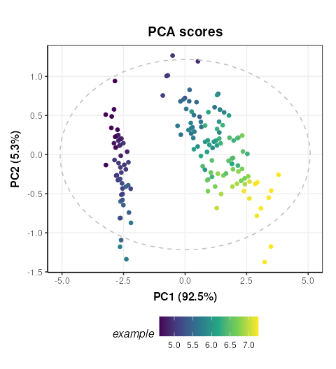
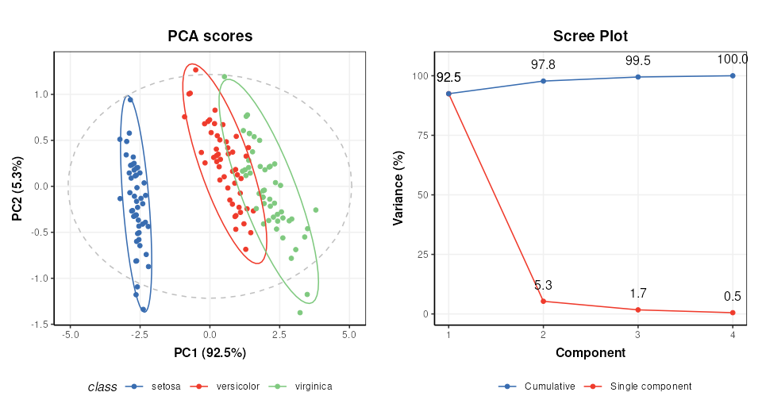
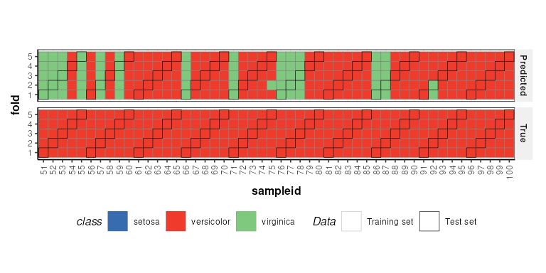

Introduction to 'struct' objects
Gavin R Lloyd
Phenome Centre Birmingham, University of Birmingham, UKg.r.lloyd@bham.ac.uk
Andris Jankevics
Phenome Centre Birmingham, University of Birmingham, UKa.jankevics@bham.ac.uk
Ralf J Weber
Phenome Centre Birmingham, University of Birmingham, UKr.j.weber@bham.ac.uk
2026-02-21
Source:vignettes/articles/introduction_to_struct_objects.Rmd
introduction_to_struct_objects.RmdIntroduction to struct objects, including models, model
sequences, model charts and ontology.
Introduction
PCA (Principal Component Analysis) and PLS (Partial Least Squares)
are commonly applied methods for exploring and analysing multivariate
datasets. Here we use these two statistical methods to demonstrate the
different types of struct (STatistics in R Using Class
Templates) objects that are available as part of the
structToolbox and how these objects (i.e. class templates)
can be used to conduct unsupervised and supervised multivariate
statistical analysis.
Dataset
For demonstration purposes we will use the “Iris” dataset. This famous (Fisher’s or Anderson’s) dataset contains measurements of sepal length and width and petal length and width, in centimeters, for 50 flowers from each of 3 class of Iris. The class are Iris setosa, versicolor, and virginica. See here (https://stat.ethz.ch/R-manual/R-devel/library/datasets/html/iris.html) for more information.
Note: this vignette is also compatible with the Direct infusion mass spectrometry metabolomics “benchmark” dataset described in Kirwan et al., Sci Data 1, 140012 (2014) (https://doi.org/10.1038/sdata.2014.12).
Both datasets are available as part of the structToolbox package and
already prepared as a DatasetExperiment object.
## Iris dataset (comment if using MTBLS79 benchmark data)
D = iris_DatasetExperiment()
D$sample_meta$class = D$sample_meta$Species
## MTBLS (comment if using Iris data)
# D = MTBLS79_DatasetExperiment(filtered=TRUE)
# M = pqn_norm(qc_label='QC',factor_name='sample_type') +
# knn_impute(neighbours=5) +
# glog_transform(qc_label='QC',factor_name='sample_type') +
# filter_smeta(mode='exclude',levels='QC',factor_name='sample_type')
# M = model_apply(M,D)
# D = predicted(M)
# show info
D## A "DatasetExperiment" object
## ----------------------------
## name: Fisher's Iris dataset
## description: This famous (Fisher's or Anderson's) iris data set gives the measurements in centimeters of
## the variables sepal length and width and petal length and width,
## respectively, for 50 flowers from each of 3 species of iris. The species are
## Iris setosa, versicolor, and virginica.
## data: 150 rows x 4 columns
## sample_meta: 150 rows x 2 columns
## variable_meta: 4 rows x 1 columnsDatasetExperiment objects
The DatasetExperiment object is an extension of the
SummarizedExperiment class used by the Bioconductor
community. It contains three main parts:
-
dataA data frame containing the measured data for each sample. -
sample_metaA data frame of additional information related to the samples e.g. group labels. -
variable_metaA data frame of additional information related to the variables (features) e.g. annotations
Like all struct objects it also contains
name and description fields (called “slots” is
R language).
A key difference between DatasetExperiment and
SummarizedExperiment objects is that the data is
transposed. i.e. for DatasetExperiment objects the samples
are in rows and the features are in columns, while the opposite is true
for SummarizedExperiment objects.
All slots are accessible using dollar notation.
# show some data
head(D$data[,1:4])## Sepal.Length Sepal.Width Petal.Length Petal.Width
## 1 5.1 3.5 1.4 0.2
## 2 4.9 3.0 1.4 0.2
## 3 4.7 3.2 1.3 0.2
## 4 4.6 3.1 1.5 0.2
## 5 5.0 3.6 1.4 0.2
## 6 5.4 3.9 1.7 0.4Using struct model objects
Statistical models
Before we can apply e.g. PCA we first need to create a PCA object. This object contains all the inputs, outputs and methods needed to apply PCA. We can set parameters such as the number of components when the PCA model is created, but we can also use dollar notation to change/view it later.
P = PCA(number_components=15)
P$number_components=5
P$number_components## [1] 5The inputs for a model can be listed using
param_ids(object):
param_ids(P)## [1] "number_components"Or a summary of the object can be printed to the console:
P## A "PCA" object
## --------------
## name: Principal Component Analysis (PCA)
## description: PCA is a multivariate data reduction technique. It summarises the data in a smaller number of
## Principal Components that maximise variance.
## input params: number_components
## outputs: scores, loadings, eigenvalues, ssx, correlation, that
## predicted: that
## seq_in: dataModel sequences
Unless you have good reason not to, it is usually sensible to mean
centre the columns of the data before PCA. Using the STRUCT
framework we can create a model sequence that will mean centre and then
apply PCA to the mean centred data.
M = mean_centre() + PCA(number_components = 4)In structToolbox mean centring and PCA are both model
objects, and joining them using “+” creates a model_sequence object. In
a model_sequence the outputs of the first object (mean centring) are
automatically passed to the inputs of the second object (PCA), which
allows you chain together modelling steps in order to build a
workflow.
The objects in the model_sequence can be accessed by indexing, and we can combine this with dollar notation. For example, the PCA object is the second object in our sequence and we can access the number of components as follows:
M[2]$number_components## [1] 4Training/testing models
Model and model_sequence objects need to be trained using data in the
form of a DatasetExperiment object. For example, the PCA
model sequence we created (M) can be trained using the iris
DatasetExperiment object (‘D’).
M = model_train(M,D)This model sequence has now mean centred the original data and calculated the PCA scores and loadings.
Model objects can be used to generate predictions for test datasets. For the PCA model sequence this involves mean centring the test data using the mean of training data, and the projecting the centred test data onto the PCA model using the loadings. The outputs are all stored in the model sequence and can be accessed using dollar notation. For this example we will just use the training data again (sometimes called autoprediction), which for PCA allows us to explore the training data in more detail.
M = model_predict(M,D)Sometimes models don’t make use the training/test approach
e.g. univariate statsitics, filtering etc. For these models the
model_apply method can be used instead. For models that do
provide training/test methods, model_apply applies
autoprediction by default i.e. it is a short-cut for applying
model_train and model_predict to the same
data.
M = model_apply(M,D)The available outputs for an object can be listed and accessed like input params, using dollar notation:
output_ids(M[2])## [1] "scores" "loadings" "eigenvalues" "ssx" "correlation"
## [6] "that"
M[2]$scores## A "DatasetExperiment" object
## ----------------------------
## name:
## description:
## data: 150 rows x 4 columns
## sample_meta: 150 rows x 2 columns
## variable_meta: 4 rows x 1 columnsModel charts
The struct framework includes chart objects. Charts
associated with a model object can be listed.
chart_names(M[2])## [1] "pca_biplot" "pca_correlation_plot" "pca_dstat_plot"
## [4] "pca_loadings_plot" "pca_scores_plot" "pca_scree_plot"Like model objects, chart objects need to be created before they can be used. Here we will plot the PCA scores plot for our mean centred PCA model.
C = pca_scores_plot(factor_name='class') # colour by class
chart_plot(C,M[2])
Note that indexing the PCA model is required because the
pca_scores_plot object requires a PCA object as input, not
a model_sequence.
If we make changes to the input parameters of the chart,
chart_plot must be called again to see the effects.
# add petal width to meta data of pca scores
M[2]$scores$sample_meta$example=D$data[,1]
# update plot
C$factor_name='example'
chart_plot(C,M[2])
The chart_plot method returns a ggplot object so that
you can easily combine it with other plots using the
gridExtra or cowplot packages for example.
# scores plot
C1 = pca_scores_plot(factor_name='class') # colour by class
g1 = chart_plot(C1,M[2])
# scree plot
C2 = pca_scree_plot()
g2 = chart_plot(C2,M[2])
# arange in grid
grid.arrange(grobs=list(g1,g2),nrow=1)
Ontology
Within the struct framework (and
structToolbox) an ontology slot is provided to
allow for standardardised definitions for objects and its inputs and
outputs using the Ontology Lookup Service (OLS).
For example, STATO is a general purpose STATistics Ontology (http://stato-ontology.org). From the webpage:
Its aim is to provide coverage for processes such as statistical tests, their conditions of application, and information needed or resulting from statistical methods, such as probability distributions, variables, spread and variation metrics. STATO also covers aspects of experimental design and description of plots and graphical representations commonly used to provide visual cues of data distribution or layout and to assist review of the results.
The ontology for an object can be set by assigning the ontology term
identifier to the ontology slot of any struct_class object
at design time. The ids can be listed using $ notation:
# create an example PCA object
P=PCA()
# ontology for the PCA object
P$ontology## [1] "OBI:0200051"The ontology method can be used obtain more detailed
ontology information. When cache = NULL the
struct package will automatically attempt to use the OLS
API (via the rols package) to obtain a name and description
for the provided identifiers. Here we used cached versions of the
ontology definitions provided in the structToolbox package
to prevent issues connecting to the OLS API when building the
package.
ontology(P,cache = ontology_cache()) # set cache = NULL (default) for online use## [[1]]
## An object of class "ontology_list"
## Slot "terms":
## [[1]]
## term id: OBI:0200051
## ontology: obi
## label: principal components analysis dimensionality reduction
## description: A principal components analysis dimensionality reduction is a dimensionality reduction
## achieved by applying principal components analysis and by keeping low-order principal
## components and excluding higher-order ones.
## iri: http://purl.obolibrary.org/obo/OBI_0200051
##
##
##
## [[2]]
## An object of class "ontology_list"
## Slot "terms":
## [[1]]
## term id: STATO:0000555
## ontology: stato
## label: number of predictive components
## description: number of predictive components is a count used as input to the principle component analysis
## (PCA)
## iri: http://purl.obolibrary.org/obo/STATO_0000555Note that the ontology method returns definitions for
the object (PCA) and the inputs/outputs (number_of_components).
Validating supervised statistical models
Validation is an important aspect of chemometric modelling. The
struct framework enables this kind of iterative model
testing through iterator objects.
Cross-validation
Cross validation is a common technique for assessing the performance of classification models. For this example we will use a Partial least squares-discriminant analysis (PLS-DA) model. Data should be mean centred prior to PLS, so we will build a model sequence first.
M = mean_centre() + PLSDA(number_components=2,factor_name='class')
M## A model_seq object containing:
##
## [1]
## A "mean_centre" object
## ----------------------
## name: Mean centre
## description: The mean sample is subtracted from all samples in the data matrix. The features in the centred
## matrix all have zero mean.
## input params: mode
## outputs: centred, mean_data, mean_sample_meta
## predicted: centred
## seq_in: data
##
## [2]
## A "PLSDA" object
## ----------------
## name: Partial least squares discriminant analysis
## description: PLS is a multivariate regression technique that extracts latent variables maximising
## covariance between the input data and the response. The Discriminant Analysis
## variant uses group labels in the response variable. For >2 groups a 1-vs-all
## approach is used. Group membership can be predicted for test samples based on
## a probability estimate of group membership, or the estimated y-value.
## input params: number_components, factor_name, pred_method
## outputs: scores, loadings, yhat, design_matrix, y, reg_coeff, probability, vip, pls_model, sr, sr_pvalue, predicted_labels, prob_model
## predicted: predicted_labels
## seq_in: dataiterator objects like the k-fold cross-validation object
(kfold_xval) can be created just like any other
struct object. Parameters can be set at creation using the
equals sign, and accessed or changed later using dollar notation.
# create object
XCV = kfold_xval(folds=5,factor_name='class')
# change the number of folds
XCV$folds=10
XCV$folds## [1] 10The model to be cross-validated can be set/accessed using the
models method.
## A model_seq object containing:
##
## [1]
## A "mean_centre" object
## ----------------------
## name: Mean centre
## description: The mean sample is subtracted from all samples in the data matrix. The features in the centred
## matrix all have zero mean.
## input params: mode
## outputs: centred, mean_data, mean_sample_meta
## predicted: centred
## seq_in: data
##
## [2]
## A "PLSDA" object
## ----------------
## name: Partial least squares discriminant analysis
## description: PLS is a multivariate regression technique that extracts latent variables maximising
## covariance between the input data and the response. The Discriminant Analysis
## variant uses group labels in the response variable. For >2 groups a 1-vs-all
## approach is used. Group membership can be predicted for test samples based on
## a probability estimate of group membership, or the estimated y-value.
## input params: number_components, factor_name, pred_method
## outputs: scores, loadings, yhat, design_matrix, y, reg_coeff, probability, vip, pls_model, sr, sr_pvalue, predicted_labels, prob_model
## predicted: predicted_labels
## seq_in: dataAlternatively, iterators can be combined with models using the
multiplication symbol was shorthand for the models
assignement method:
# cross validation of a mean centred PLSDA model
XCV = kfold_xval(
folds=5,
method='venetian',
factor_name='class') *
(mean_centre() + PLSDA(factor_name='class'))The run method can be used with any
iterator object. The iterator will then run the set model
or model sequence multiple times.
In this case we run cross-validation 5 times, splitting the data into different training and test sets each time.
The run method also needs a metric to be
specified, which is another type of struct object. This
metric may be calculated once after all iterations, or after each
iteration, depending on the iterator type (resampling, permutation etc).
For cross-validation we will calculate “balanced accuracy” after all
iterations.
XCV = run(XCV,D,balanced_accuracy())
XCV$metric## metric mean sd
## 1 balanced_accuracy 0.8533333 NANote The balanced_accuracy metric actually reports
1-accuracy, so a value of 0 indicates perfect performance. The standard
deviation “sd” is NA in this example because there is only one
permutation.
Like other struct objects, iterators can have chart
objects associated with them. The chart_names function will
list them for an object.
chart_names(XCV)## [1] "kfoldxcv_grid" "kfoldxcv_metric"Charts for iterator objects can be plotted in the same
way as charts for any other object.
C = kfoldxcv_grid(
factor_name='class',
level=levels(D$sample_meta$class)[2]) # first level
chart_plot(C,XCV)
It is possible to combine multiple iterators by using the multiplication symbol. This is equivalent to nesting one iterator inside the other. For example, we can repeat our cross-validation multiple times by permuting the sample order.
# permute sample order 10 times and run cross-validation
P = permute_sample_order(number_of_permutations = 10) *
kfold_xval(folds=5,factor_name='class')*
(mean_centre() + PLSDA(factor_name='class',number_components=2))
P = run(P,D,balanced_accuracy())
P$metric## metric mean sd
## 1 balanced_accuracy 0.854 0.006629526